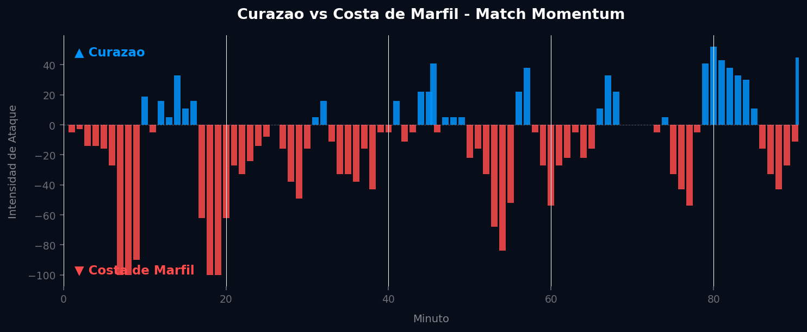

📝 Crónica y Análisis Posterior (Post-Partido)
🎯 PREDICCIÓN EXACTA
⚽ Resumen del Partido (Resultado Real: Curazao 0 - 2 Costa de Marfil)
El encuentro entre Curazao y Costa de Marfil en el Grupo E del Mundial 2026 se saldó con una victoria previsible pero trabajada para los Elefantes por 2-0. Desde el pitido inicial, Costa de Marfil impuso un ritmo vertiginoso, capitalizando su dominio inicial con un gol tempranero en el minuto 9, fruto de una gran jugada colectiva que culminó el delantero centro tras un desborde por la banda izquierda. Este gol temprano marcó la pauta del partido, obligando a Curazao a replegarse y buscar oportunidades al contragolpe. La primera mitad vio a los africanos controlar el balón y las zonas de influencia, aunque sin generar una avalancha de ocasiones claras más allá del gol. En la segunda mitad, Costa de Marfil selló el marcador con un segundo tanto en el minuto 62, esta vez mediante un potente disparo desde fuera del área que dejó sin opciones al portero de Curazao. Pese a ir 0-2 abajo, Curazao mostró pundonor en los minutos finales, logrando su pico de intensidad ofensiva cerca del minuto 80, en un intento desesperado por acortar distancias, aunque sin éxito.
🔮 Impacto en el Grupo E y Proyecciones para la Siguiente Fase
- Ajuste del Algoritmo: La victoria con portería a cero de Costa de Marfil optimiza significativamente sus métricas defensivas y eleva su eficiencia ofensiva, reforzando su posición como un contendiente sólido en el modelo de predicción. Para Curazao, la incapacidad de anotar y la derrota resultan en una caída en su capacidad ofensiva esperada y un incremento en la vulnerabilidad defensiva en el algoritmo.
- Proyección de la Siguiente Fase (Octavos de Final / Clasificación): Tras esta última jornada, Costa de Marfil consolida su clasificación a los Octavos de Final, muy probablemente como líder del Grupo E, dependiendo de los resultados de otros encuentros, lo que le permitiría afrontar la siguiente fase con la moral alta. Curazao, por su parte, queda matemáticamente eliminado de la competición, cerrando su participación en el Mundial 2026 sin puntos y con la sensación de haber enfrentado un desafío demasiado grande.
📈 Análisis del Match Momentum y Match Point (Punto Crítico)
Costa de Marfil demostró su intención desde el inicio, alcanzando su pico máximo de intensidad ofensiva de 100.00 en el minuto 7'. Esta explosión inicial se tradujo en el gol que abrió el marcador pocos minutos después, estableciendo un dominio que perduraría a lo largo de gran parte del encuentro, controlando el 63.0% del tiempo en intensidad de ataque. Este arranque fulminante fue clave para desestabilizar la estrategia defensiva de Curazao, que se vio forzada a perseguir el resultado desde temprano.
Curazao, pese a sus esfuerzos, solo pudo dominar el 31.5% de la intensidad ofensiva, alcanzando su punto máximo en el minuto 80' con una intensidad de 52.00, un esfuerzo tardío que buscaba una reacción cuando el partido ya estaba prácticamente sentenciado. El Match Point del encuentro fue indudablemente el gol de Costa de Marfil en el minuto 9, directamente precedido por su pico de intensidad en el minuto 7'. Este momento de inflexión no solo puso a los africanos en ventaja, sino que también alteró fundamentalmente el guion táctico, obligando a Curazao a abandonar su plan inicial y exponiendo sus limitaciones ante un rival de mayor jerarquía.
Gráfico: Match Momentum (Intensidad de Ataque)

🇨🇼 Curazao: Análisis Táctico
El planteamiento táctico de Curazao, bajo una formación que priorizaba la solidez defensiva, intentó contener la embestida inicial de Costa de Marfil. Sus aciertos se limitaron a momentos de orden defensivo en el mediocampo, intentando cerrar los pasillos centrales y forzar a su rival a las bandas. Sin embargo, sufrieron enormemente para imponer su estilo, limitándose a transiciones rápidas que rara vez prosperaron más allá del primer tercio del campo rival. La falta de contundencia en la salida de balón y una presión alta ineficaz permitieron a Costa de Marfil monopolizar la posesión y dictar el ritmo del juego, dejando a Curazao en una postura reactiva y sin capacidad de respuesta real durante la mayor parte del cotejo.
🇨🇮 Costa de Marfil: Análisis Táctico
Costa de Marfil exhibió un planteamiento proactivo y dominante, utilizando un bloque medio-alto que ahogó la salida de balón de Curazao y generó constantes recuperaciones en campo rival. Sus virtudes ofensivas se manifestaron en la velocidad de sus extremos y la capacidad de sus mediocampistas para romper líneas con pases verticales y diagonales. Defensivamente, el equipo se mostró muy sólido, con una presión coordinada tras la pérdida y una excelente cobertura de espacios, lo que explica la portería a cero. La respuesta del equipo ante el rival fue ejemplar: aprovecharon la debilidad defensiva inicial de Curazao con un arranque explosivo y luego gestionaron la ventaja con madurez, alternando fases de posesión prolongada con aceleraciones punzantes, sin dar opciones al adversario.
⚖️ Comparativa y Veredicto
El duelo táctico de entrenadores evidenció la superioridad de Costa de Marfil, cuya estrategia ofensiva y de presión alta desarticuló por completo las intenciones de contención y contragolpe de Curazao. Mientras el técnico africano pudo implementar su plan de juego desde el minuto uno, el estratega de Curazao vio cómo el gol tempranero desbarataba cualquier esperanza de un partido más equilibrado. El veredicto final es que el marcador de 0-2 es completamente justo y refleja con precisión la diferencia de calidad individual y, más aún, la disparidad táctica entre ambos equipos en este crucial encuentro del Mundial.
📊 Pizarras y Gráficos Tácticos
 Costa de Marfil
Costa de Marfil